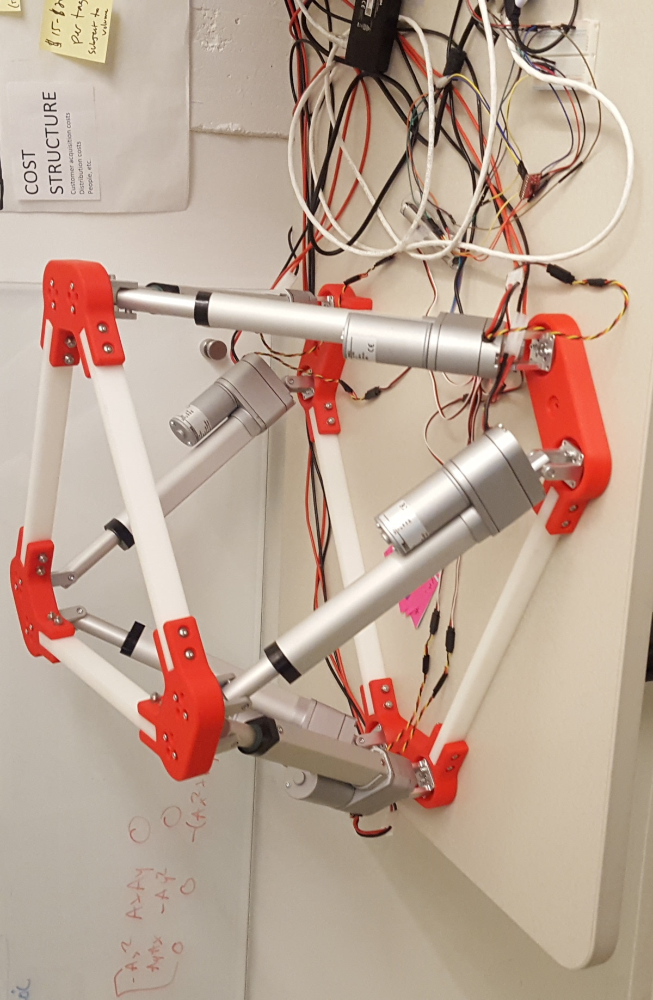

Robotic Demos
- DASlab and the TerraSentia (Girish Chowdhary)
- Weasel Bots (Steven LaValle)
- Yaskawa and Industrial Robots
- BattleBots
- Arity
- Robotics Outreach (FLL/FTC/FRC)
DASlab and the TerraSentia
Offline Topological Maps
At the start of graduate school I got interested in topological mapping. I ended up implementing the work of Meng et al. on the TerraSentia robot . The topological map built from this work (right) is shown in contrast to the metric map built using RTAB-Map (left) of the lab I work in.
One can then use this topological map as well as a few trained models in order to navigate the robot to a goal image. This GIF is sped up by 2X.

One point of failure in the topological map creation was in the edges that span across the map.
This would mean that two parts of the graph that are actually far apart are represented as being close in the topological map, causing the robot to fail to navigate to the goal. Emmons et al. would coin this phenomenon as a wormhole.
When I applied Meng’s method to the Gibson dataset inside of Habitat, the creation of wormholes in the topological map was still prevalent. In the following figure are image pairs connected in the topological map that were predicted to be similar, but were actually 5-20 meters apart.
One way that I seeked to eliminate wormholes was to incorporate pose estimates from ORB-SLAM2.
Using Meng’s method, on average 7.29% of edges in the Gibson maps were wormholes. After incorporating pose I was able to reduce that to get an average of 0.19% of edges being wormholes. When using the respective maps on a down stream image-goal navigation task I found pruning the wormholes improved navigation success from 15.3% to 28.1%.
Online Topological Maps
I am currently following a line of research where topological maps are made online for embodied AI tasks.
Agriculture Robots
Agriculture is a very cool application of robotics. The robot will have to complete tasks in a GPS denied environment where everything looks the same, is slightly dynamic, with constant camera occlusion. When I first joined DASlab I assisted with two projects for the TerraSentia robot. The first project involved training a deep learning model to predict whether the robot is in a crop row or not. This was useful for other navigation and planning tasks performed by the robot such turning into a new row of crops. The model I trained ended up getting around 96% accuracy on this task.

The second project consisted of writing some scripts to do nightly testing of the robot’s software. This interfaced with some external hardware as well as a Gazebo simulation.
Weasel Bots
For my undergraduate thesis I worked on a “weasel bot” which was a simple, random, bouncing robot. I was interested in designing a mechanical structure that goes around the weasel bot that allows it to connect with other weasel bots. The ultimate goal in this project was to study what tasks can be accomplished through minimal sensing including pushing an object and having the robots join together in a configuration.

This project resulted in a publication at MRS 2018 and also allowed me to open source a python package that was more efficient than SciPy at solving a system of equations when the equations were represented through a sparse Kronecker product.
Yaskawa and Industrial Robots
At Yaskawa the applications engineering teams are responsible for making some cool robotics demos. On this team I helped develop a motion planning library used for various applications of industrial robots.
I mostly ran my code on the following gantry robot that was presented at a trade show.

Another system that I would test my code on was a robot arm demo that was designed to use its suction cups to grasp onto blocks from the green conveyor belt and pack them into a square on the white conveyor belt.
A cool extension of the prototype gantry robot was on a gigantic 3D printer with a robot arm at one end that I helped a customer debug. The final demo of this project had the gantries 3D print a boat.

I have some further experience with factory robotics from when I did a separate internship at a plastic injection molding factory. That experience gave me some good experience in human-robotic interactions in an industrial setting as well as some insight into the lack of computer vision in industrial robotics processes.
BattleBots
During my Freshman and Sophomore year of college I was involved in the battlebots competitions. During my Freshman year I assisted with the machining, CAD, and some of the basic electronics for a battlebot that ultimately failed to run. During my Sophomore year I was head of electronics for the robot “Who Do You Know Here” which had weapon failure due to the weapon motor breaking shortly before its fight. This robot got destroyed so badly that to this day the local battlebots club uses it in their promo videos.

Arity
At Arity I was responsible for creating a robotics demo that could help visualize the sensor readings from a car. For example, in this project the Stewart Platform would tilt backwords when the car was accelerating, forward when the car was deaccelerating, and to the side when turning. This tilt would also be affected by the speed of the car.

Robotics Outreach
I am very passionate about outreach as I didn’t have the opportunity to get involved in robotics until I got to UIUC. I previously mentored middle school aged students in FLL. I then went on to help expand the university’s robotics outreach program to the local high schools to facilitate the creation and mentoring of some of the local FTC and FRC teams. I was also a judge for some local and regional FLL tournaments.